해커톤 사전 준비 가이드
코딩 경험이 없는 분이 해커톤 당일 바로 시작할 수 있도록, 내 노트북에 Amazon Quick Desktop과 Kiro IDE를 설치하는 방법을 화면과 함께 안내합니다. 두 앱 모두 본인 PC에 직접 설치합니다.
해커톤 전에 꼭 끝내주세요. 설치는 인터넷 속도에 따라 약 20~30분 걸립니다. 당일 현장에서 처음 설치하면 시간이 빠듯하니, 미리 이 가이드를 따라 환경을 준비해 주세요.
전체 흐름 한눈에 보기
사전 준비물 체크
시작하기 전에 아래 항목을 확인하세요.
| 항목 | 설명 |
|---|---|
| 개인 노트북 | Windows 10 (64비트) 이상. RAM 8GB 이상, 여유 디스크 공간 500MB 이상(검색·인덱싱 기능까지 쓰려면 10GB 이상 권장). |
| 안정적인 인터넷 | 설치 파일 다운로드, 로그인, AI 모델 접근에 필요합니다. 가능하면 유선 또는 안정적인 Wi-Fi. |
| 로그인 계정 | Amazon Quick에 로그인할 계정. 이메일 · Amazon · Apple · Google · GitHub 중 하나로 가입할 수 있습니다. 해커톤에서 별도 계정을 안내하면 그것을 따르세요. |
| 서비스 아이디어 | PoC로 만들어보고 싶은 아이디어 메모. 한두 줄이어도 충분합니다 (자세할수록 좋아요). |
회사(Enterprise) 계정을 쓰나요? 조직 관리자가 먼저 설정을 해줘야 기업 로그인이 동작합니다. 해커톤 진행자나 IT 담당자의 안내를 따르세요. 개인 계정(무료/Plus)이라면 바로 가입해 사용할 수 있습니다.
Amazon Quick Desktop 설치하기
Quick Desktop이란?
Amazon Quick Desktop은 내 노트북에 직접 설치하는 AI 어시스턴트 앱입니다. 웹에서 쓰는 Amazon Quick을 데스크톱으로 가져온 것으로, 내 컴퓨터의 파일을 직접 다루고, 이메일·메신저 같은 서비스와 연결해 일을 도와줍니다. local-first 구조라 AI 처리가 내 컴퓨터에서 이뤄지고 파일도 내 PC에 남습니다.
이번 해커톤에서는 Quick을 리서치·아이디어 정리·자료 검색 같은 보조 도구로 쓰고, 실제 화면(PoC)을 만드는 일은 Part 2의 Kiro IDE로 진행합니다.
둘 중 하나만 하면 됩니다. Quick은 ① 웹에서 가입해 바로 사용하거나, ② 데스크톱 앱을 설치해 사용할 수 있습니다. 둘 다 같은 계정을 씁니다. 해커톤에서는 설치가 필요 없는 웹 사용을 권장합니다. 로컬 파일 접근 같은 고급 기능이 필요하면 데스크톱 앱(선택)을 설치하세요.
웹에서 가입하기 권장
설치가 필요 없는 가장 간단한 방법입니다. 웹에서 가입하면 브라우저에서 바로 Quick을 쓸 수 있습니다.
-
Amazon Quick 웹 열기
웹 브라우저에서 아래 주소로 이동합니다.
https://quick.aws.com/
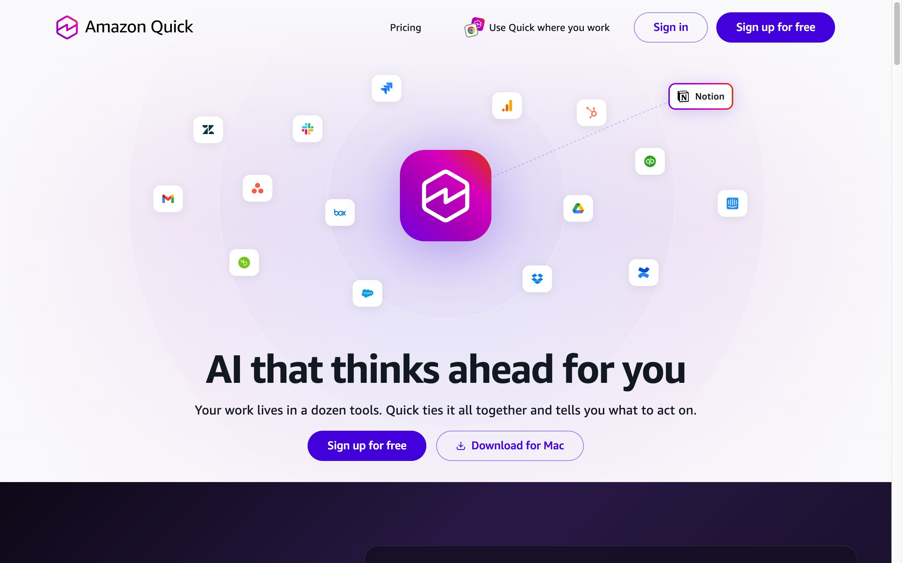
그림 1-1. 웹에서 Amazon Quick에 접속합니다. 오른쪽 위 Sign up for free로 가입할 수 있습니다. -
로그인 제공자 선택
“Continue with”를 누르고 원하는 제공자를 선택합니다. 이메일 · Amazon · Apple · Google · GitHub 중 본인이 평소에 쓰는 것을 고르면 됩니다. (회사 Enterprise 계정은 진행자/IT 담당자 안내를 따르세요.)
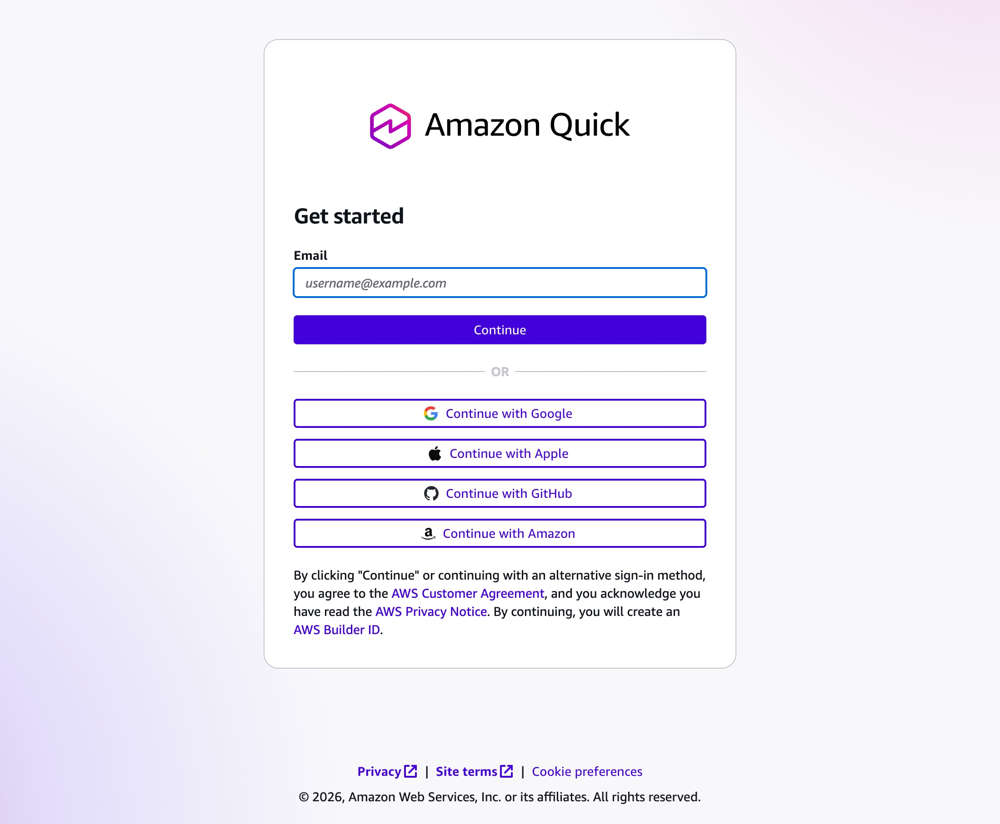
그림 1-2. 이메일을 넣거나, Google·Apple·GitHub·Amazon 중 익숙한 계정으로 계속하면 됩니다. (가입 시 AWS Builder ID가 만들어집니다) -
인증 완료 → 웹 홈 진입
선택한 제공자 화면에서 로그인하고(필요하면 다중 인증까지) 완료하면 Amazon Quick 웹 홈으로 들어갑니다. 여기까지 되면 계정이 만들어진 것입니다.
여기까지 하면 Quick 준비 끝입니다. 웹 홈 화면이 보이면 바로 사용할 수 있어요. 데스크톱 앱은 필요할 때만 설치하면 되니, 곧바로 Part 2 · Kiro IDE 설치로 넘어가도 됩니다.
데스크톱 앱으로 쓰기 선택
웹만으로 충분하지만, 로컬 파일 직접 접근·백그라운드 에이전트·MCP 연결 같은 고급 기능이 필요하면 데스크톱 앱을 설치할 수 있습니다. 웹으로 이미 가입했다면 안 해도 됩니다.
-
설치 파일 다운로드
quick.aws.com페이지를 아래로 내려 PLATFORMS → Desktop 카드에서 Windows 버튼을 누릅니다. 설치 파일(Amazon-Quick.exe)이 받아집니다. (Mac은 같은 카드의 Mac 버튼 →.dmg) -
설치 후 실행
받은 파일을 더블클릭해 설치하고 Amazon Quick을 실행합니다. (Windows SmartScreen 경고가 뜨면 “추가 정보 → 실행”을 선택)
-
웹과 같은 계정으로 로그인
앱이 열리면 웹에서 가입할 때 쓴 것과 같은 방법(이메일·Google·GitHub 등)으로 로그인합니다. 인사말과 채팅 입력창이 있는 홈 화면이 보이면 준비 완료입니다.
참고. Amazon Quick 데스크톱 앱은 현재 프리뷰(preview) 단계라 화면 구성이 버전에 따라 조금씩 다를 수 있습니다. 데이터 연결(이메일·폴더 등)을 묻는 화면은 건너뛰기(Dismiss)해도 됩니다.
Kiro IDE 설치하기
Kiro IDE란?
Kiro는 AWS가 만든 AI 코딩 에이전트(IDE)입니다. "이런 화면을 만들어줘"처럼 한국어로 말하면, Kiro가 알아서 코드를 작성하고 화면을 만들어 줍니다. 비개발자가 코드를 몰라도 대화만으로 동작하는 웹 화면을 만들 수 있는 것이 핵심입니다.
Kiro IDE도 Part 1의 Amazon Quick과 같은 내 노트북에 설치합니다. 두 앱은 서로 다른 도구이니 각각 설치해야 합니다 — Quick은 리서치·정리용 어시스턴트, Kiro는 실제 화면(PoC)을 만드는 코딩 에이전트입니다.
1단계 · 다운로드 & 설치
-
Kiro 다운로드 페이지 열기
웹 브라우저에서 아래 주소로 이동합니다.
https://kiro.dev/downloads
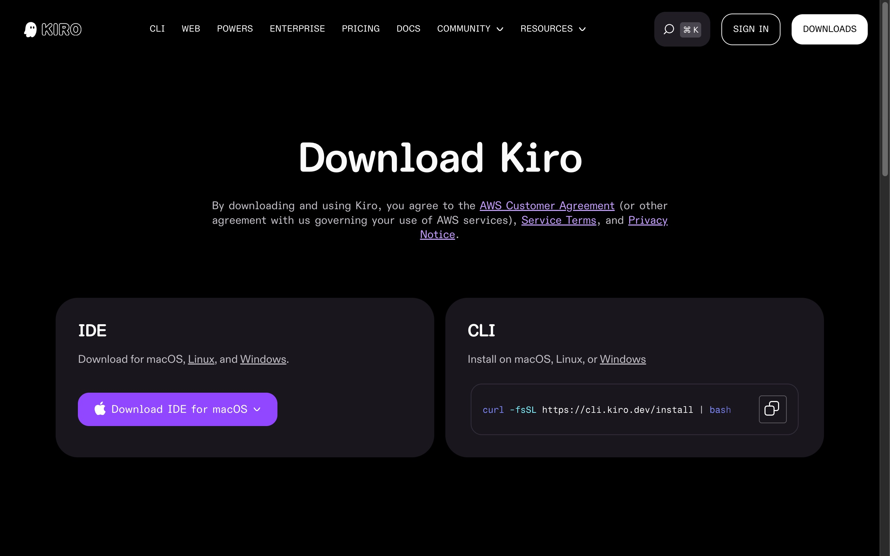
그림 2-1. IDE 카드의 Download IDE 버튼을 누릅니다. (버튼 옆 ⌄에서 Windows 선택 가능) -
Windows용 설치 파일 받기
Download for Windows 버튼을 클릭해 설치 파일을 받습니다.
Kiro IDE는 64비트 Windows 10 / 11만 지원합니다 (ARM 미지원). 대부분의 노트북은 호환되니 그대로 진행하면 됩니다.
-
설치 실행
다운로드한 파일을 더블클릭하고, 설치 안내(Next → Install → Finish)를 따릅니다. 설치가 끝나면 Kiro가 자동으로 실행됩니다.
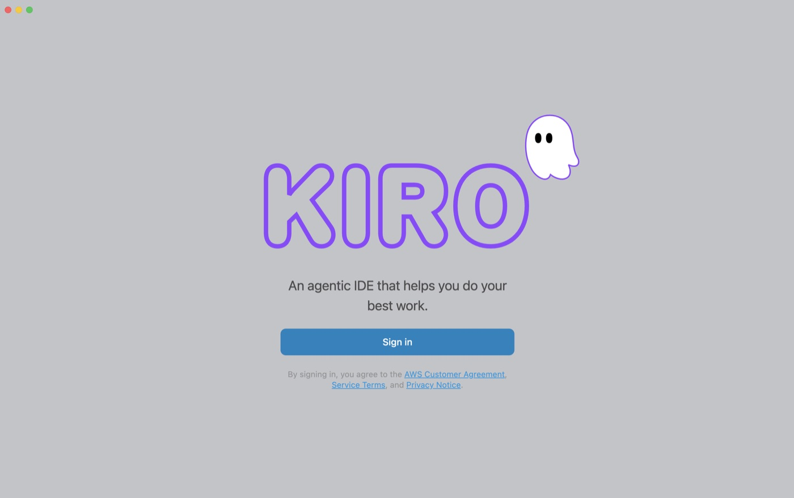
그림 2-2. 설치가 끝나면 이 첫 화면이 열립니다. Sign in을 눌러 다음 단계로 진행합니다.
2단계 · 로그인 & 초기 설정
Kiro를 처음 실행하면 몇 가지 초기 설정을 묻습니다. 순서대로 따라오세요.
-
로그인 방법 선택
로그인 화면에서 제공자를 선택합니다. 해커톤에서 별도 안내가 없다면 AWS Builder ID 또는 Google / GitHub 중 본인이 쓰기 편한 것을 고릅니다.
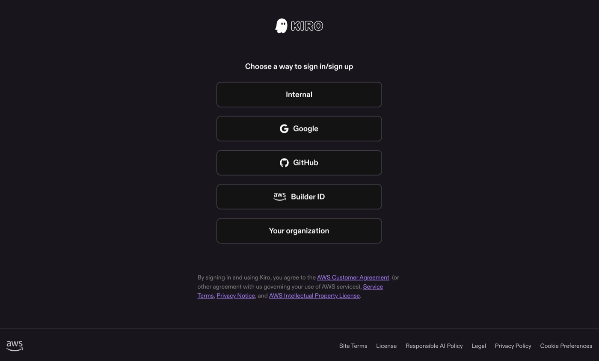
그림 2-3. Choose a way to sign in/sign up 화면. 해커톤 진행자의 안내(계정 종류)를 우선 따르세요. AWS Builder ID가 없다면 로그인 과정에서 무료로 즉시 만들 수 있습니다(이메일만 있으면 됨).
-
브라우저 인증 완료
로그인 버튼을 누르면 브라우저가 열립니다. 안내에 따라 로그인 / 허용(Allow)을 누른 뒤 Kiro 창으로 돌아오면 자동으로 연결됩니다.
-
설정 가져오기 (건너뛰기 OK)
VS Code 설정을 가져올지 묻는 화면이 나오면, 처음 쓰는 분은 Skip / 건너뛰기를 눌러도 됩니다.
-
테마 선택
Kiro Dark(어두운 테마) 또는 Kiro Light(밝은 테마) 중 원하는 것을 고릅니다. 나중에 언제든 바꿀 수 있습니다.
-
셸 통합 허용
셸 통합(Shell integration)을 허용하라는 안내가 나오면 허용(Allow)을 선택합니다. 이래야 AI가 대신 명령을 실행하며 화면을 만들어 줄 수 있습니다.
3단계 · 설치 확인
아래 그림처럼 환영 화면(Getting started)이 보이고, 오른쪽에 AI 대화창(Chat)이 열려 있으면 준비 완료입니다.
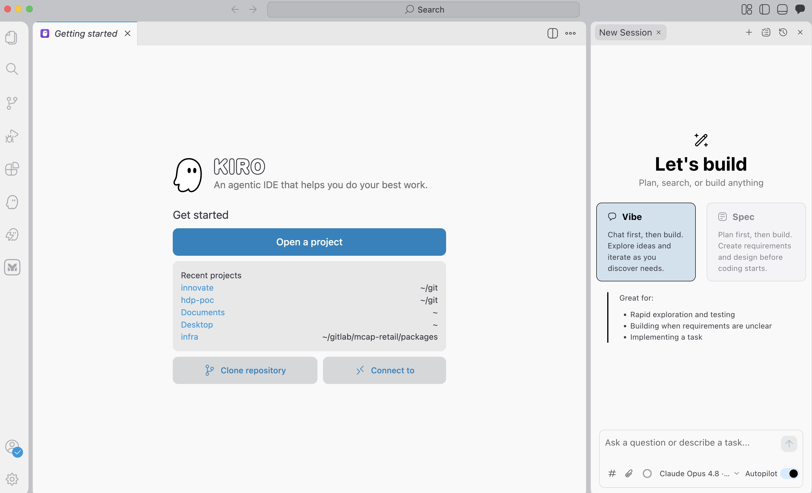
오른쪽에 대화창이 안 보이나요? 창 오른쪽 위의 말풍선(채팅) 아이콘을 클릭하면 대화 패널이 열립니다. (그림 2-4의 오른쪽 위 아이콘들 중 말풍선 모양)
대화창이 열렸으면, 간단히 인사를 보내 응답이 오는지 확인해 보세요.
AI가 한국어로 답을 보내면 모든 준비가 끝났습니다. 이어서 Part 3 키로와 친해지기로 감을 잡아봅시다.
응답이 오지 않거나 오류가 보이면, 로그인이 정상인지(우측 하단 계정 표시) 확인하고, Kiro를 완전히 종료한 뒤 다시 실행해 보세요. 그래도 안 되면 당일 진행자에게 화면을 보여주세요.
워터 트래커 하나를 점점 키워보기
본격적인 PoC를 만들기 전에, 워터 트래커(물 마시기 기록) 하나를 4단계에 걸쳐 점점 발전시켜 보며 Kiro와 대화하는 감을 잡아봅니다. 이미지 한 장으로 시작해서, 디자인을 바꾸고, 저장 기능을 더하고, 마지막엔 3D 게임으로까지 키웁니다. 아래 프롬프트를 그대로 복사해 붙여넣으면 됩니다.
예제는 1 → 2 → 3 → 4 순서대로 같은 프로젝트에 이어서 진행합니다. 하나 끝낼 때마다 브라우저를 새로고침해 결과를 눈으로 확인하세요. 같은 워터 트래커가 단계마다 어떻게 변하는지 보는 것이 핵심입니다.
준비물. 예제 1에는 미리 준비된 손그림 워터 트래커 이미지를 사용합니다(아래 예제 1에 첨부). 진행자가 안내한 이미지를 내려받아 두면 됩니다.
예제 시작 전 — 작업할 폴더 먼저 열기
Kiro는 폴더(작업 공간)가 열려 있어야 파일을 만들고 브라우저로 열 수 있습니다. 폴더를 열지 않으면 "열린 폴더가 없어 파일을 만들 수 없어요"라는 안내가 나옵니다. 예제를 시작하기 전에 아래 순서로 빈 작업 폴더를 하나 만들어 열어두세요.
-
새 폴더 만들기 (Windows 파일 탐색기)
바탕화면에서 마우스 오른쪽 클릭 → 새로 만들기 → 폴더를 선택하고 이름을
water-tracker처럼 알아보기 쉽게 지어줍니다. -
Kiro에서 그 폴더 열기
Kiro 상단 메뉴 File → Open Folder (단축키
Ctrl + K누른 뒤Ctrl + O)를 누르고, 방금 만든water-tracker폴더를 선택합니다. -
신뢰 묻는 창이 뜨면 허용
"Do you trust the authors of the files in this folder?" 같은 창이 나오면 Yes, I trust the authors를 선택합니다. 이래야 Kiro가 그 폴더에서 파일을 만들고 실행할 수 있습니다.
폴더가 열리면 왼쪽 탐색기(Explorer)에 폴더 이름이 보입니다. 이제 예제 1부터 시작하면,
Kiro가 이 폴더 안에 .html 파일을 만들고 브라우저로 직접 열어 줍니다.
목표제공된 손그림 워터 트래커 이미지를 업로드하고, 그것과 똑같이 동작하는 웹 페이지를 만듭니다.
이 실습에는 미리 준비된 손그림 워터 트래커 이미지를 사용합니다. 아래 이미지를 내려받아 (또는 진행자가 안내한 파일을) 준비하세요.
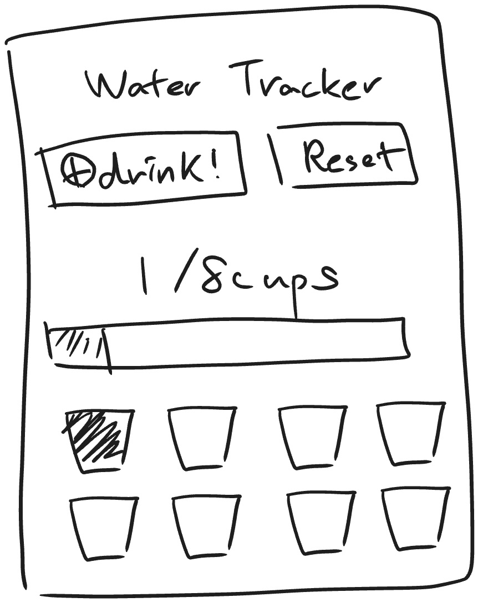
↓ 이미지 다운로드이 손그림 이미지를 Kiro 대화창에 끌어다 놓거나, Win + Shift + S로 캡처해
Ctrl + V로 붙여넣은 뒤 아래 프롬프트를 함께 보냅니다.
(대화창에 워터 트래커 이미지를 붙여넣은 뒤, 아래 글을 함께 보냅니다)
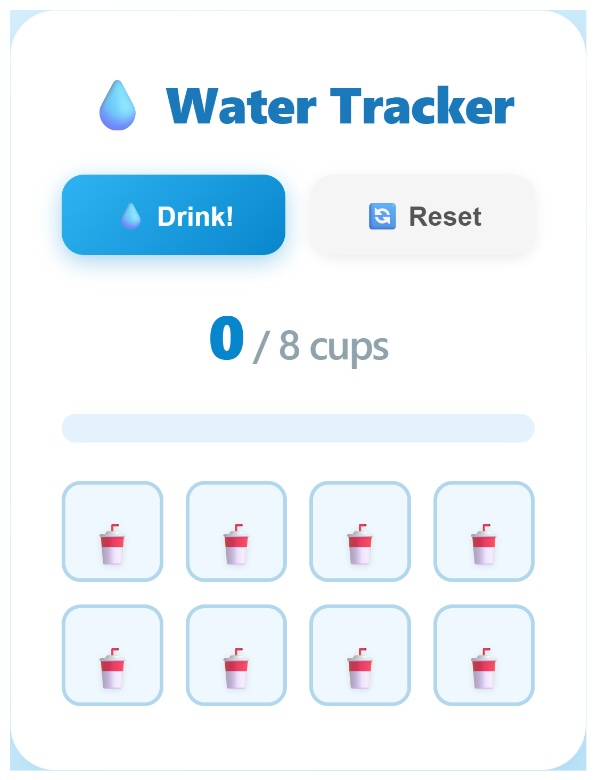
왜 이미지부터? 말로 "워터 트래커 만들어줘"라고 하는 것보다, 원하는 모습을 이미지로 보여주면 Kiro가 레이아웃·색·구성을 훨씬 정확하게 잡아냅니다.
목표기능은 그대로 둔 채, 서로 다른 고급 브랜드 스타일 4가지 목업을 만들고 그중 마음에 드는 하나를 고릅니다.
디자인을 한 번에 정하지 말고, 여러 후보를 먼저 보고 고르면 훨씬 만족스러운 결과가 나옵니다. Kiro에게 서로 다른 브랜드 무드 4가지를 한 번에 보여 달라고 해봅시다.
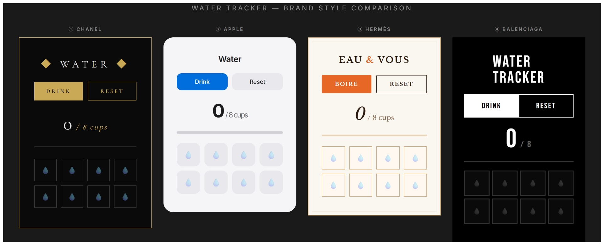
네 가지를 본 뒤, 마음에 드는 하나를 골라 그것으로 확정합니다.
한 걸음 더. 위 4개 브랜드는 예시일 뿐입니다. "토스 스타일", "레트로 게임기 스타일", "북유럽 가구 스타일"처럼 아는 브랜드·분위기로 바꿔도 되고, 좋아하는 화면을 캡처해 붙여넣으며 "이런 느낌도 후보에 넣어줘"라고 해도 좋습니다.
목표브라우저를 닫았다 열어도 마신 잔 수가 그대로 남아 있게 합니다.
지금까지는 새로고침하면 마신 잔 수가 0으로 돌아갑니다. 브라우저에 저장(localStorage)해서 영속성을 더해 봅니다.
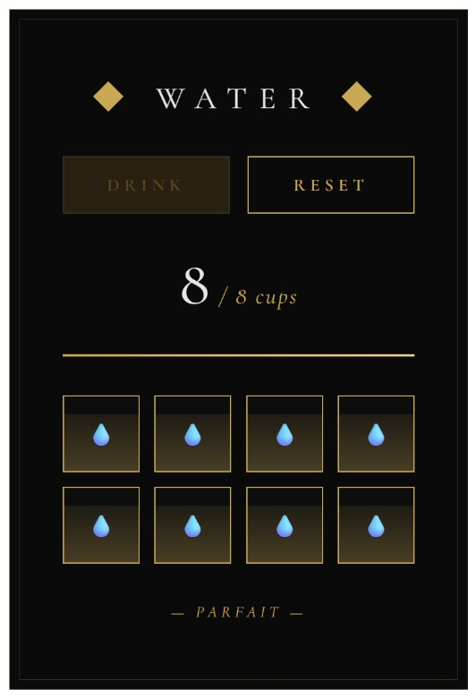
확인 방법. 물잔을 몇 개 채운 뒤 F5(새로고침)를 눌러 보세요.
마신 잔 수가 그대로 남아 있으면 저장 기능이 잘 동작하는 것입니다.
목표three.js를 이용해 워터 트래커를 입체(3D)로 보여주고, 게임처럼 즐겁게 만듭니다.
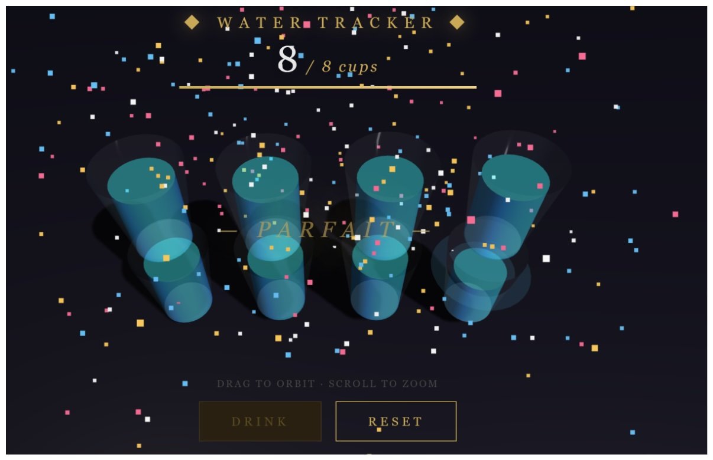
한 번에 안 되면. 3D는 한 번에 완벽하게 안 나올 수 있습니다. "컵이 안 보여", "물이 차오르는 효과가 없어"처럼 무엇이 부족한지 그대로 말하면 Kiro가 이어서 고쳐 줍니다. (자세한 요령은 Part 4 · 04 막혔을 때 참고)
이미지 한 장으로 시작한 워터 트래커가 스타일 변경 → 저장 → 3D 게임까지 발전했습니다. 이렇게 작게 시작해서 한 단계씩 키우는 것이 PoC의 핵심입니다. 이제 Part 4의 팁을 보며 나만의 PoC로 넘어갑시다.
비개발자를 위한 PoC 제작 팁
여기서부터는 해커톤 당일에 AI 코딩 에이전트로 나만의 PoC를 잘 만드는 요령입니다. 핵심은 하나 — AI는 "똑똑한 신입 개발자"라고 생각하고, 사람에게 일을 부탁하듯 구체적으로 말하는 것입니다.
01 · 프롬프트 작성법
코드를 몰라도 됩니다. 대신 "무엇을, 누구를 위해, 어떻게 보이게"를 말로 설명하세요. 막연하게 부탁하지 말고, 아래 4가지 재료를 의식적으로 넣으면 결과가 확 좋아집니다.
| 재료 | 설명 | 예시 표현 |
|---|---|---|
| 맥락 | 나는 누구, 이건 무슨 서비스 | "나는 비개발자야. 헬스장 출석 체크 앱을 만드는 중이야." |
| 대상 | 어떤 화면 / 부분을 | "오늘 운동 기록을 보여주는 메인 화면을" |
| 동작 | 무엇을 하길 원하는지 | "운동 종류를 추가하는 버튼을 넣어줘." |
| 기준 | 완성 조건 / 스타일 | "버튼을 누르면 목록에 바로 추가되어 보여야 해. 색은 초록 계열로." |
| 이렇게 말하면 (모호함) | 이렇게 말하면 (명확함) |
|---|---|
| "쇼핑몰 만들어줘" | "반려동물 간식을 파는 모바일 쇼핑몰의 상품 목록 화면을 만들어줘. 상품 카드에는 사진, 이름, 가격, '담기' 버튼이 있어." |
| "예쁘게 해줘" | "전체 톤은 파스텔 핑크와 흰색으로, 둥근 모서리에 따뜻한 느낌으로 해줘. 글씨는 큼직하게." |
황금 공식. "[누가] [어떤 화면]에서 [무엇]을 [어떻게] 한다"를 한 문장에 담으면 거의 정확히 알아듣습니다. 그리고 한 번에 완벽하지 않아도 됩니다 — 일단 만들게 한 뒤 화면을 보며 다듬는 게 더 빠릅니다.
한꺼번에 다 만들지 마세요. 10개 화면을 한 번에 요청하면 무엇이 틀렸는지 찾기 어렵습니다. 가장 중요한 화면 하나부터 만들고 확인하는 작은 반복이 비개발자에게 가장 안전합니다.
02 · 이미지를 적극 활용하기
말로 설명하기 어려운 것은 그림으로 보여주는 게 100배 빠릅니다. Kiro 대화창에는 이미지를 붙여넣을 수 있습니다. 비개발자에게 이건 가장 강력한 무기입니다.
이렇게 활용하세요
| 상황 | 이미지로 이렇게 |
|---|---|
| 참고하고 싶은 디자인이 있을 때 | 마음에 드는 앱 / 사이트 화면을 캡처해 붙여넣고 "이런 느낌으로 만들어줘" |
| 지금 화면에서 특정 부분만 고치고 싶을 때 | 내 화면을 캡처해 붙여넣고 "여기 이 버튼을 더 크게 해줘" |
| 손으로 그린 구상이 있을 때 | 종이에 그린 스케치를 사진 찍어 붙여넣고 "이 레이아웃대로 만들어줘" |
| 에러 화면이 떴을 때 | 빨간 에러 화면을 캡처해 붙여넣고 "이거 무슨 문제야? 고쳐줘" |
화면 캡처 단축키 (Windows). Win + Shift + S를 누르면
원하는 영역을 드래그해 캡처할 수 있습니다. 그 상태로 Kiro 대화창에 Ctrl + V로 붙여넣으면 됩니다.
(대화창에 참고 이미지를 붙여넣은 뒤, 아래 글을 함께 보냅니다)
03 · 상황별 바로 쓰는 프롬프트 모음
해커톤 중 자주 만나는 상황별로, 복사해서 [ ] 부분만 바꿔 쓰는 프롬프트입니다.
처음 화면을 만들 때
디자인을 바꾸고 싶을 때
기능을 추가하고 싶을 때
결과를 직접 눈으로 확인하고 싶을 때
샘플 데이터가 필요할 때
대괄호 [ ] 부분만 본인 아이디어에 맞게 바꿔 넣으면 됩니다.
04 · 막혔을 때 / 버그가 생겼을 때
화면이 안 뜨거나, 결과가 이상하거나, 에러 메시지가 보여도 당황하지 마세요. 그 상황을 그대로 AI에게 말하면 대부분 해결됩니다. 버그는 실패가 아니라 대화로 고치면 되는 자연스러운 과정입니다.
에러 화면은 캡처해서 보내세요. Win + Shift + S로 에러가 보이는
화면을 캡처해 대화창에 붙여넣으면(Ctrl + V), AI가 원인을 훨씬 정확히 찾아냅니다.
최후의 수단. 도저히 안 풀리면 한 화면에 매달리지 말고, 가장 보여주고 싶은 다른 화면으로 넘어가세요. PoC의 목적은 완벽한 완성이 아니라 아이디어를 눈에 보이게 만드는 것입니다.
최종 체크리스트
해커톤 전날까지 아래 항목이 모두 충족되면 완벽하게 준비된 것입니다.
| 완료 | 항목 |
|---|---|
| ☐ | Amazon Quick을 준비했다 — 웹(quick.aws.com)에서 가입했거나, (선택) 데스크톱 앱을 설치해 로그인했다 |
| ☐ | 내 노트북에 Kiro IDE를 설치했다 |
| ☐ | Kiro에 로그인하고 테마·셸 통합 설정을 마쳤다 |
| ☐ | (선택) Part 3 '키로와 친해지기' 워터 트래커 예제를 하나라도 직접 해봤다 |
모두 체크되었나요? 준비 끝입니다. 해커톤 당일에는 Part 4의 팁을 참고하며 나만의 PoC를 만들어 봅시다. 어렵게 느껴지면 AI에게 그냥 물어보세요.